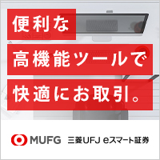
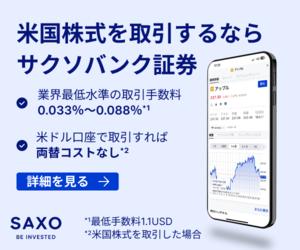
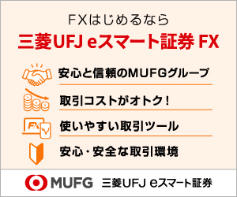
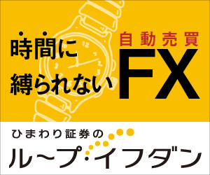
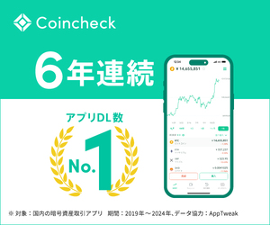
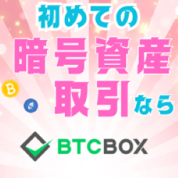

.jpg)
.png)
数字だけでなく使いやすさも見る
手数料や商品数だけでなく、実際に迷いにくいかも確認しています。
2026年版 / 個人運営の投資サービス比較サイト
証券会社・FX口座・暗号資産取引所を、手数料・取扱商品・少額取引・使いやすさ・メリット・デメリットから比較しています。 個別ページでは「何円から」「何銘柄」「どの手数料が0円か」など、条件をできるだけ具体的な数字で整理。 NISA、自動売買、積立、ステーキングなど、目的に合う比較ページへ進める構成にしています。
最終更新：（証券・FX・暗号資産の主要個別ページを再確認）
証券・FX・暗号資産の主要条件を2026年9月29日に見直し。 個別記事では、公式情報を確認しながら手数料・取扱商品・最小取引単位などを具体化しています。
手数料だけではサービスの違いは分かりません。 当サイトでは、取扱商品・最小取引単位・積立・自動売買・ツール・資金拘束なども含めて比較します。
広告提携の有無だけで掲載順を決めず、 公式条件と実際に確認した使い勝手を分けながら、メリットと注意点の両方を整理しています。
株・FX・仮想通貨、どこから見ればいいかわからない人向けです。 かんたんな質問に答えるだけで、まず見るべき入口を整理できます。
「総合1位」だけで決めず、違いが出やすいサービスをジャンル別に2社ずつ掲載しています。 各カードでは検索で確認されやすい具体的な特徴を示し、メリット・デメリットは個別ページで確認できます。
NISA・国内株・米国株など、何をしたいかで向く口座は変わります。 初心者向けから情報収集重視まで分けて整理しています。
FXは始めやすさ・ツール・自動売買などで選び方が変わります。 目的別に見やすく分けています。
少額から始めたい人、積立したい人、取引したい人で向くサービスは変わります。 用途別に整理しています。
NISA・国内株・米国株・手数料などを比較したい人向けに、主要サービスを特徴別に整理しています。
.png) Bloomo証券
Bloomo証券
三菱UFJ eスマート
サクソバンク証券最小取引単位・通貨ペア・自動売買・裁量トレードなど、FX口座の違いを目的別に整理しています。

三菱UFJ eスマート証券FX
マネックス証券 FX PLUS取扱銘柄・最低購入額・積立・ステーキング・レンディング・CFDなど、暗号資産サービスを用途別に整理しています。

コインチェック
BTCBOX.png) OKJ
OKJ数字だけでなく、取引方法や利用条件まで確認しないと違いが見えにくい場合があります。 当サイトでは、コスト・取扱商品・使いやすさ・注意点を分けて整理しています。
手数料や商品数だけでなく、実際に迷いにくいかも確認しています。
広告提携の有無とは分けて、サービス条件・用途・注意点を確認しています。
条件やキャンペーンは変わることがあります。申し込み前に公式サイトで最新条件を確認してください。
投資ポータル.jpは、有名な投資家でも金融機関の人間でもない、一人の個人運営者が、 初心者にも使いやすい投資サービスを探しながら手作業で育てている比較・学習サイトです。 大手メディアとは違う個人サイトだからこそ、次の3つを大切にしています。
当サイトは静的HTMLを中心に構築し、Googleの「PageSpeed Insights」で表示性能を確認しながら、スマートフォンでも高速で安定した表示を追求しています。 また、画面を覆うポップアップ広告など、閲覧を妨げる広告表示は採用せず、情報を快適に読めるサイト設計を大切にしています。
情報整理や制作の効率化にはAIを活用しています。 ただし、比較基準・レビュー・注意点・おすすめの根拠など、読者の判断に関わる内容は、 公開前に管理人自身が確認し、必要に応じて修正・推敲しています。
広告の有無だけで評価を決めず、実際に使う側から見て気になった点も掲載します。 特定サービスをおとしめるための表現ではなく、 「初心者には操作が難しい」「用途によっては合わない」といった注意点を、できるだけ客観的に文章で整理します。
このサイトの目的は、投資判断を代わりに行うことではありません。 証券・FX・仮想通貨の違いを理解し、自分に合ったサービスを選ぶための材料を、 一般ユーザーの目線から分かりやすく整理することです。
投資ポータル.jpは完成形ではありません。 記事を追加し、比較を見直し、実際に確認しながら少しずつ育て続けます。 迷ったときに戻ってこられる場所、初心者が迷いにくく学べる場所を目指して運営していきます。